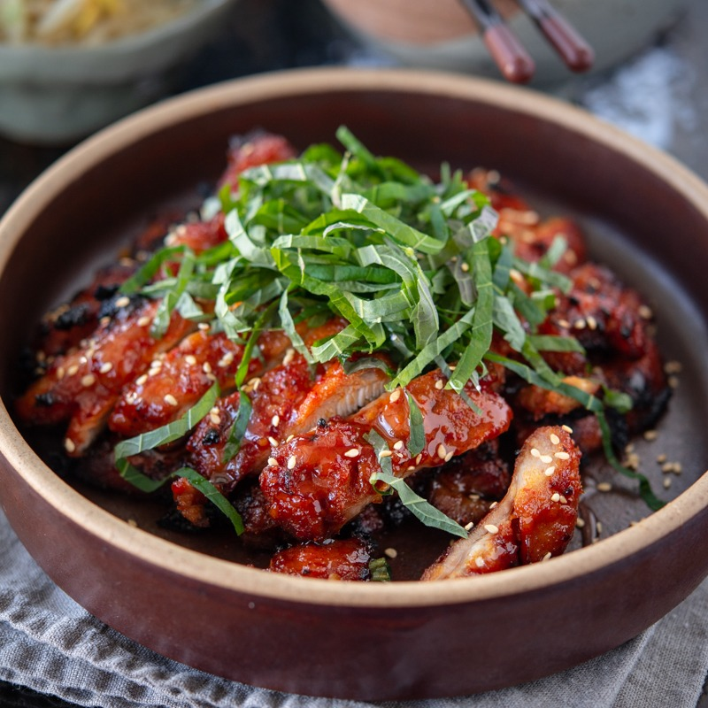

Chicken Bulgogi

Description
If you hear the word, Bulgogi, you immediately think of the famous Korean bbq beef dish. However, Bulgogi doesn’t limit on the beef.
Try this Chicken bulgogi, the Korean BBQ chicken, and you will be surprised how wonderful chicken tastes.
Most bulgogi chicken recipes use a soy sauce-based seasoning that offers a unique savory flavor.
However, I prefer to season my bulgogi chicken with gochujang (Korean chili paste). Give it a try—you might love it too!
Ingredients
- Chicken thigh: Boneless and skinless preferred
- Gochujang and Gochugaru (Korean chili flakes)
-
Korean Corn Syrup (or plain corn syrup): It adds shine to the dish
and makes the chicken look more scrumptions
-
Other Korean pantry ingredients like soy sauce,
brown sugar, garlic, ginger paste, sesame oil
Steps
-
Pound chicken thigh with a meat hammer.
This will tenderize chicken and help cook the chicken faster and more even.
-
Mix all the seasoning ingredients in a large mixing bowl to make the paste.
Add chicken and toss well to coat the chicken with the seasoning.
I recommend to let it sit in a room temperature for 10 minutes while you are preheating the oven to broil.
-
Grease a cooling rack and place it on a large baking sheet (lined with piece of foil for easy clean up).
Put chicken pieces and broil for 4-5 minute per each side until the surface is slightly charred and chicken is fully cooked.
The oven shelving should be about 5-6 inch below the heat source. Watch carefully so that you don’t char the chicken too much.
-
Cut up the chicken with a sharp knife into a bite size chunks.
Transfer on a serving dish and garnish with perilla leaves or chopped green onion.